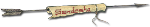

Welcome to Apache Axis
The well known Apache Axis, and the the second generation of it, the Apache Axis2, are two Web Service
containers that helps
users to create, deploy, and run Web Services.
Axis2 is avaialble in both Java as well as C, languages and details about each version can be found
below.
Axis project sites
Apache Axis2/Java
 |
Axis2 is a Web Services / SOAP / WSDL engine, the successor to the widely used Apache Axis SOAP
stack. There are two implementations of the Apache Axis2 Web services engine - Apache Axis2/Java
and Apache Axis2/C
While you will find all the information on Apache Axis2/Java here
|
Apache Axis2/C
|
Apache Axis2/C is a Web services engine implemented in the C programming language. It is based on
the extensible and flexible Axis2 architecture. Apache Axis2/C can be used to provide and consume
WebServices. It has been implemented with portability and ability to embed in mind, hence could be
used as a Web services enabler in other software.
|
Apache Rampart (WS-Security/WS-Trust)
|
|
Rampart is the security module of Axis2. With Rampary module, you can secure Axis2 web services
for authentication, integrity, confidentiality and non - repudiation. Rampart secures SOAP
messages according to specifications in the WS-Security stack.
|
Apache Sandesha
(WS-ReliableMessaging)
| 
|
Sandesha2 gives reliable messaging capabilities to Axis2. From the point of view of the Axis2
engine, Sandesha2 is a module. When this module is engaged to a service, clients have the option
of invoking it in a reliable manner. In the client side Sandesha2 module can be used to interact
with existing reliable Web services.
|
Apache Sandesha2/C
|
|
Sandesha2/C is a C implementation of WS-ReliableMessaging
specification published by IBM, Microsoft, BEA and TIBCO. Sandesha2/C is
built on top of Apache Axis2/C Web
services engine, as a module.
Therefore by using Sandesha2/C you can add reliable messaging capability to
Web services hosted using Axis2/C. Sandesha2/C can also be used with Axis2/C
client to interact with already hosted Web services in a reliable manner.
|
Apache Savan (WS-Eventing)
|
Savan/Java is a C implementation of WS-Eventing specification. Savan/Java is built on top of
Axis2/C.
Therefore by using Savan/Java you can add WS-Eventing capability to Web services hosted using
Axis2/Java. Savan/C was designed as a general publisher/subscriber tool. The arcitecture was
designed to abstract the general publisher/subscriber features so that people could support more
than one publisher/subscriber mechanisms within the same infrastructure.
|
Apache Savan/C
|
Savan/C is a C implementation of WS-Eventing specification. Savan/C is built on top of Axis2/C.
Therefore by using Savan/C you can add WS-Eventing capability to Web services hosted using Axis2/C.
Savan/C was designed as a general publisher/subscriber tool. The arcitecture was designed to
abstract the general publisher/subscriber features so that people could support more than one
publisher/subscriber mechanisms within the same infrastructure.
|
Axis2 Transports
|
Axis2 Transports are a set of transport adaptors for the Apache Axis2 project as well as for the
Apache Synapse project.
These transports consists of a set of synchronous as well as completely asynchronous transport
adaprots.
JMS Transport, E-Mail Transport, TCP Transport, SMS Transport, UDP Transport, XMPP Transport.
|
Apache Axis
 |
Apache Axis is an implementation of the SOAP ("Simple Object Access Protocol") submission to W3C.
Axis has it's implementations in Java as well as C++.
|